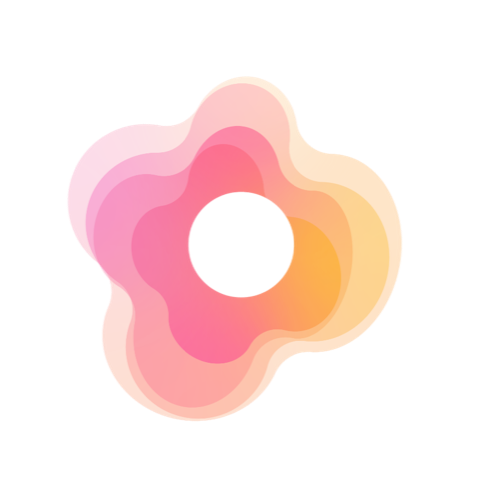
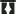
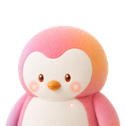
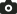

앞으로 함께할 당신을 조금 더 알고 싶어요.
몇 가지 질문으로 시작해 볼까요?
첫 번째 질문
고른 색은 앱 전체에 적용돼요.
나중에 설정에서 언제든 바꿀 수 있어요.
온기가 가까운 기기의 신호를
하나씩 듣고 있어요.

신호를 찾는 중
가까운 기기의 신호를 따라
연결 가능한 기기를 먼저 연결했어요.
자동으로 연결된 기기 6
자동으로 찾지 못한 기기는
아래에서 직접 추가할 수 있어요.
고른 기기는 연결 방법을 안내해 드려요.
ongi가 집 안을 한 바퀴 돌면서
어떤 공간에 어떤 기기가 있는지 알아가고 있어요.
추정한 공간은 나중에 바꿀 수 있어요.
ongi가 우리 집을 조금 알게 됐어요.
6개
4곳
거실 · 주방 · 현관 · 침실
조명과 스피커부터 무드등까지 하나씩 둘러봤어요.
생활 리듬이나 좋아하는 분위기는
함께 지내며 천천히 알아갈게요.
기기와 공간은 설정에서 언제든 바꿀 수 있어요.
좋은 저녁이에요
지금은 조금 편안해 보여요.
귀가 직후에는 지쳐 보였지만,
점차 움직임이 안정됐어요.
오감 센서 중 3개 감각에서 이상을 감지했어요. (3/5)
현관문이 열렸어요
도어 센서짧은 한숨이 감지됐어요
공간 마이크 · 내용 저장 안 함움직임 속도가 평소보다 느려요
실내 동작 센서심박수가 높아졌어요
체내 심박수 감지귀가 직후 피로 신호를 감지해서 분위기를 바꿨지만, 이후에도 계속되는 심박수로, 집에 아로마 향을 추가했어요.
ongi가 언제 다시 켜 줄까요?
조절하면 로봇의 빛과 움직임이
바로 미리보기로 반응해요
적용할 공간
조명
무드등
음악 · 스피커
온도 · 공기
향

커튼 · TVongi
유지 시간
잠들면 ongi가 조명과 소리를 천천히 줄여요.


카메라상태 신호만 기기 안에서 분석해요 ›
13개의 기기가 연결돼 있어요
분위기를 켜면 ongi가 이 기기들을 함께 움직여요.